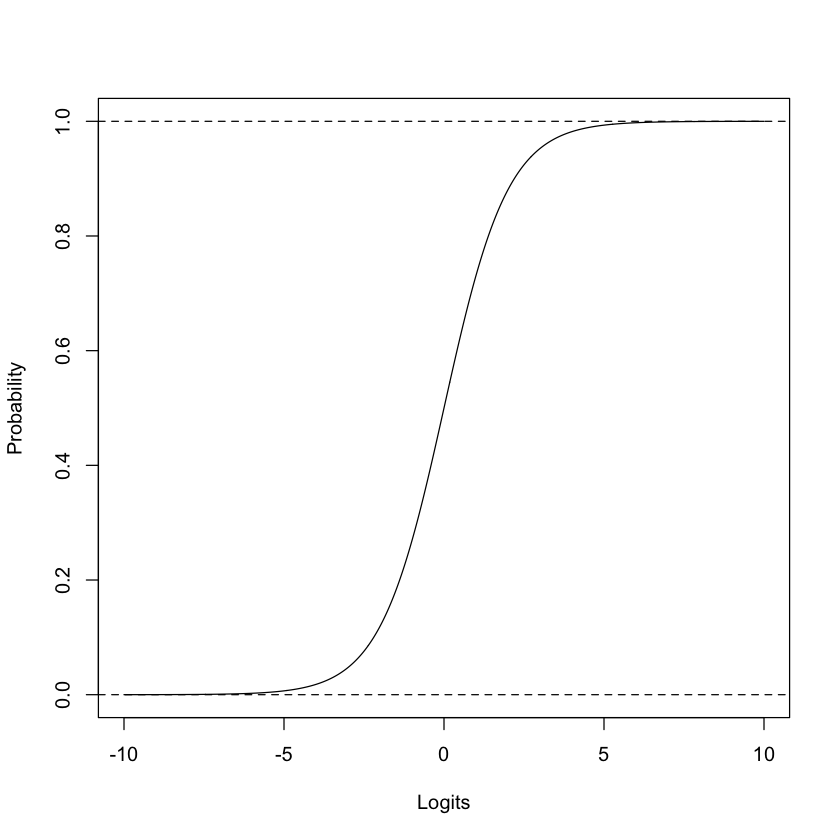
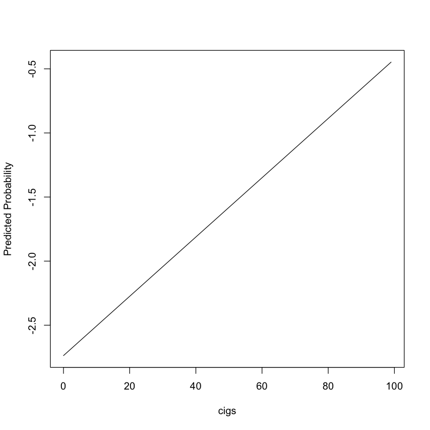
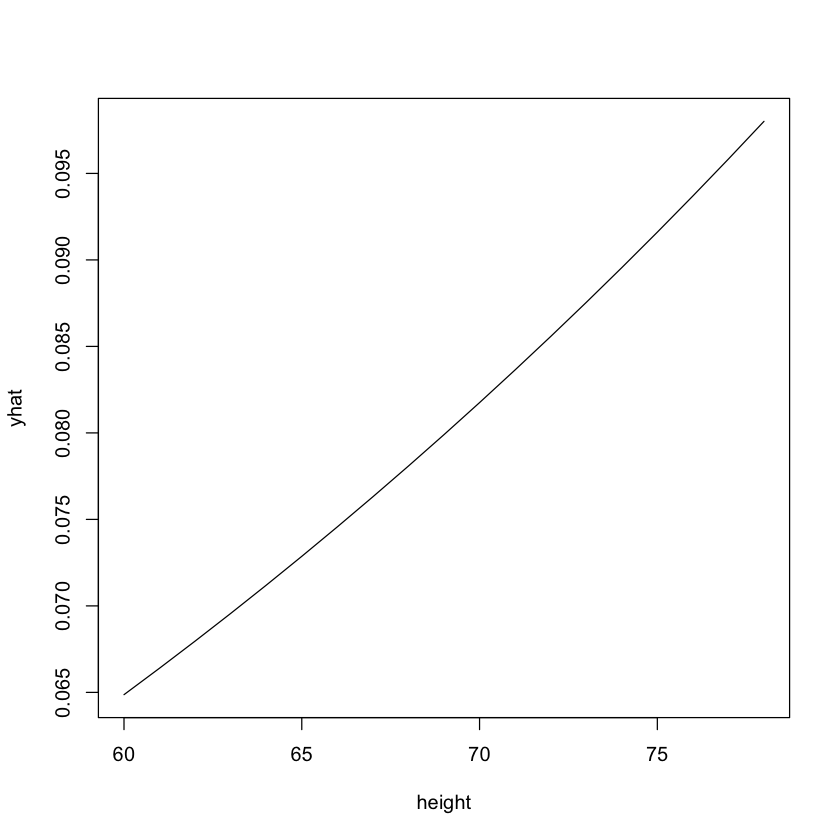

# Install required package(s)
pkgs <- c("faraway", "ggplot2", " RPart", " RPart.plot", "partykit", "pdp")
lib <- installed.packages()[, "Package"]
install.packages(setdiff(pkgs, lib))Visualizing discrete data
# Load WCGS data set from faraway package
data(wcgs, package = "faraway")
head(wcgs) # print first few records| age | height | weight | sdp | dbp | chol | behave | cigs | dibep | chd | typechd | timechd | arcus | |
|---|---|---|---|---|---|---|---|---|---|---|---|---|---|
| <int> | <int> | <int> | <int> | <int> | <int> | <fct> | <int> | <fct> | <fct> | <fct> | <int> | <fct> | |
| 1 | 49 | 73 | 150 | 110 | 76 | 225 | A2 | 25 | A | no | none | 1664 | absent |
| 2 | 42 | 70 | 160 | 154 | 84 | 177 | A2 | 20 | A | no | none | 3071 | present |
| 3 | 42 | 69 | 160 | 110 | 78 | 181 | B3 | 0 | B | no | none | 3071 | absent |
| 4 | 41 | 68 | 152 | 124 | 78 | 132 | B4 | 20 | B | no | none | 3064 | absent |
| 5 | 59 | 70 | 150 | 144 | 86 | 255 | B3 | 20 | B | yes | infdeath | 1885 | present |
| 6 | 44 | 72 | 204 | 150 | 90 | 182 | B4 | 0 | B | no | none | 3102 | absent |
# Print general structure of object
str(wcgs)# Extract the three columns of interest and print a summary of each
summary(wcgs[, c("chd", "height", "cigs")])# Construct a pie chart of the (binary) response
ptab <- prop.table(table(wcgs$chd)) # convert frequencies to proportions
pie(ptab, main = "Pie chart of Coronary Heart Disease")# Bar chart
barplot(ptab, las = 1, col = "forestgreen")# Mosaic plot showing relationship between cigs and chd
plot(chd ~ cigs, data = wcgs) library(lattice)
# Nonparametric density plot of height by chd
densityplot(~ height, groups = chd, data = wcgs, auto.key = TRUE)library(ggplot2)
# Nonparametric density plot of height by chd using ggplot2
ggplot(wcgs, aes(x = height, color = chd)) +
geom_density() +
theme_bw()# Boxplot of cigs vs. chd status
plot(cigs ~ chd, data = wcgs, col = c(2, 3))# Boxplot of height vs. chd status with notches
plot(height ~ chd, data = wcgs, col = c(2, 3), notch = TRUE)# Detour: decision trees are immensely useful tools for exploring new data sets
# Fit a default CART-like decision tree
rpart.plot::rpart.plot(rpart::rpart(chd ~ ., data = wcgs))# Fit a default conditional inference tree
plot(partykit::ctree(chd ~ height + cigs, data = wcgs))The Linear Probability Model
wcgs$y <- ifelse(wcgs$chd == "no", 0, 1) # convert binary factory to a 0/1 indicator
# Try fitting a linear model
wrong.fit <- lm(y ~ height + cigs, data = wcgs)
summary(wrong.fit)
Call:
lm(formula = y ~ height + cigs, data = wcgs)
Residuals:
Min 1Q Median 3Q Max
-0.25454 -0.09831 -0.06298 -0.05736 0.95387
Coefficients:
Estimate Std. Error t value Pr(>|t|)
(Intercept) -0.0718275 0.1338592 -0.537 0.592
height 0.0018723 0.0019171 0.977 0.329
cigs 0.0019539 0.0003339 5.851 5.38e-09 ***
---
Signif. codes: 0 ‘***’ 0.001 ‘**’ 0.01 ‘*’ 0.05 ‘.’ 0.1 ‘ ’ 1
Residual standard error: 0.2722 on 3151 degrees of freedom
Multiple R-squared: 0.0111, Adjusted R-squared: 0.01047
F-statistic: 17.69 on 2 and 3151 DF, p-value: 2.303e-08Assumptions of the LR model
- Binary Response: The response variable \(Y\) must be binary (e.g., 0/1, yes/no, etc.)
- Independence: The observations must be independent of one another (i.e., no repeated measures)
- Linearity: There must be a linear relationship between the predictors and the logit of the response
- No Multicollinearity: The predictors should not be highly correlated with one another
- Sample Size: Since LR uses MLE, it typically requires a larger sample size than ordinary linear regression for the results to be reliable (asymptotic properties)
Logistic Regression
\(E\left(Y|x_1, x_2, \dots\right) = \mu\) Linear model (assume \(y\) is normal):
\(\mu = \boldsymbol{\beta}\boldsymbol{X}\)
Generalized linear model (covers exponential family of distributions):
\(g\left(\mu\right) = \boldsymbol{\beta}\boldsymbol{X}\)
Logistic regression (assume \(y\) is Bernoulli):
\(\mu = p \in \left[0, 1\right]\) and \(g\left(\mu\right) = \log\left(\frac{p}{1 - p}\right)\)
# Mapping real numbers on the logit scale to the probability scale
x <- seq(from = -10, to = 10, length = 999)
y <- 1 / (1 + exp(-x)) # same as y <- plogis(x) or y <- exp(x) / (1 + exp(x))
plot(x, y, type = "l", xlab = "Logits", ylab = "Probability")
abline(h = c(0, 1), lty = 2)
# Fit a generalized linear model (GLM); a logistic regression model, in this case
better.fit <- glm(chd ~ height + cigs, data = wcgs, family = binomial(link = "logit"))
summary(better.fit)
Call:
glm(formula = chd ~ height + cigs, family = binomial(link = "logit"),
data = wcgs)
Coefficients:
Estimate Std. Error z value Pr(>|z|)
(Intercept) -4.50161 1.84186 -2.444 0.0145 *
height 0.02521 0.02633 0.957 0.3383
cigs 0.02313 0.00404 5.724 1.04e-08 ***
---
Signif. codes: 0 ‘***’ 0.001 ‘**’ 0.01 ‘*’ 0.05 ‘.’ 0.1 ‘ ’ 1
(Dispersion parameter for binomial family taken to be 1)
Null deviance: 1781.2 on 3153 degrees of freedom
Residual deviance: 1749.0 on 3151 degrees of freedom
AIC: 1755
Number of Fisher Scoring iterations: 5# Comparing models (analogous to general linear F-test for comparing nested linear models)
fit0 <- glm(chd ~ 1, family = binomial(link = "logit" ), data = wcgs)
fit3 <- glm(chd ~ height + cigs, family = binomial(link = "logit" ), data = wcgs)
# What statistical hypothesis is being tested here?
anova(fit3, fit0, test = "Chi")| Resid. Df | Resid. Dev | Df | Deviance | Pr(>Chi) | |
|---|---|---|---|---|---|
| <dbl> | <dbl> | <dbl> | <dbl> | <dbl> | |
| 1 | 3151 | 1749.049 | NA | NA | NA |
| 2 | 3153 | 1781.244 | -2 | -32.19451 | 1.02106e-07 |
Effect visualization
summary(better.fit)
Call:
glm(formula = chd ~ height + cigs, family = binomial(link = "logit"),
data = wcgs)
Coefficients:
Estimate Std. Error z value Pr(>|z|)
(Intercept) -4.50161 1.84186 -2.444 0.0145 *
height 0.02521 0.02633 0.957 0.3383
cigs 0.02313 0.00404 5.724 1.04e-08 ***
---
Signif. codes: 0 ‘***’ 0.001 ‘**’ 0.01 ‘*’ 0.05 ‘.’ 0.1 ‘ ’ 1
(Dispersion parameter for binomial family taken to be 1)
Null deviance: 1781.2 on 3153 degrees of freedom
Residual deviance: 1749.0 on 3151 degrees of freedom
AIC: 1755
Number of Fisher Scoring iterations: 5# Let's visualize the effect of height on the probability scale while holding cigs constant
newd <- data.frame("height" = 70, "cigs" = 0:99)
print(head(newd))
head(pred <- predict(better.fit, newdata = newd, type = "link"))
plot(newd$cigs, pred, type = "l", xlab = "cigs", ylab = "Predicted Probability") height cigs
1 70 0
2 70 1
3 70 2
4 70 3
5 70 4
6 70 5- 1
- -2.73706882751221
- 2
- -2.71394142946404
- 3
- -2.69081403141586
- 4
- -2.66768663336768
- 5
- -2.64455923531951
- 6
- -2.62143183727133

library(pdp)
# Prediction wrapper that tells `pdp::partial()` how to compute predictions from given model
pfun <- function(object, newdata) {
mean(predict(object, newdata = newdata, type = "response"))
}
# Compute (approximate) partial dependence
pd <- partial(better.fit, pred.var = "height", pred.fun = pfun)
plot(pd, type = "l")
pd2 <- partial(better.fit, pred.var = c("height", "cigs"), chull = TRUE, pred.fun = pfun, progress = "text")
lattice::wireframe(yhat ~ height * cigs, data = pd2, shade = TRUE)Variable selection
# Backward elimination
fit.back <- MASS::stepAIC(better.fit, direction = "backward")
coef(fit.back)# Forward selection
fit.forw <- MASS::stepAIC(fit0, direction = "forward")
coef(fit.forw)# WTF?Optimization (Under the hood)
# Response (as a binary 0/1 variable)
y <- wcgs$y
# Model matrix; includes a column for the intercept by default
X <- model.matrix(~ height + cigs, data = wcgs)
# Function to compute the negative log-likelihood (as a function of the betas)
nll <- function(beta) {
lp <- X %*% beta
-sum(y * lp - log(1 + exp(lp)))
}
# Use general optimization
optim(coef(wrong.fit), fn = nll,
control = list("maxit" = 9999, "reltol" = 1e-20))